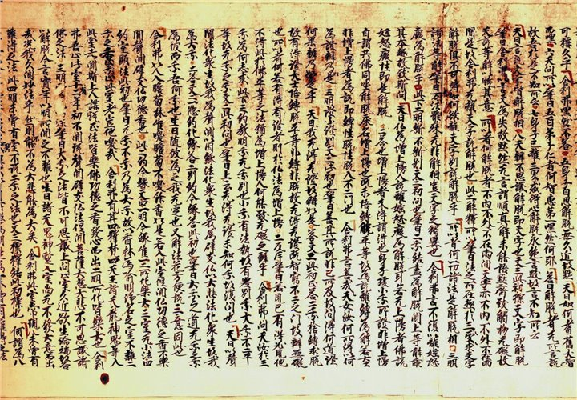
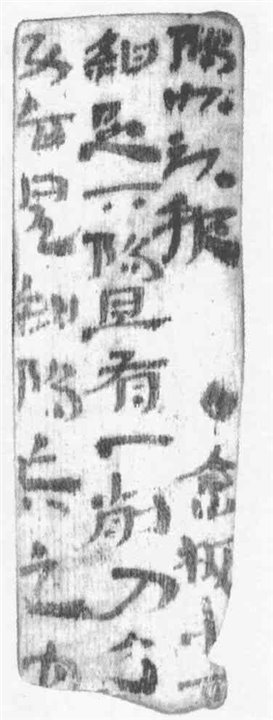
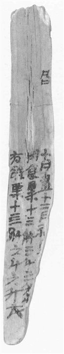
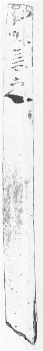
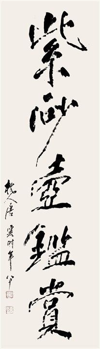
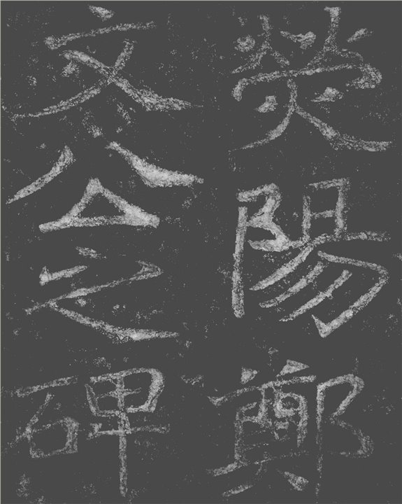
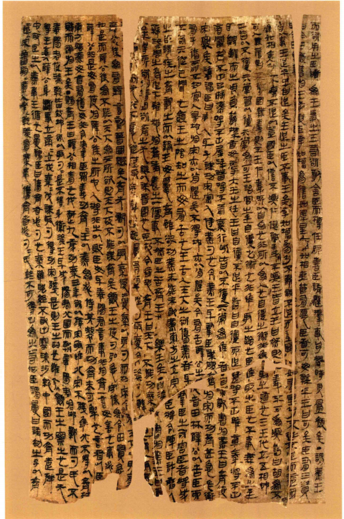
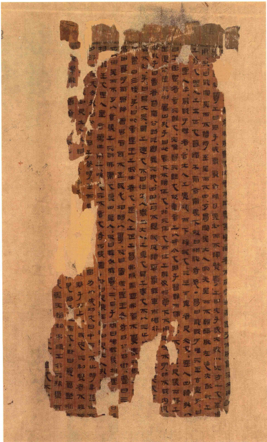
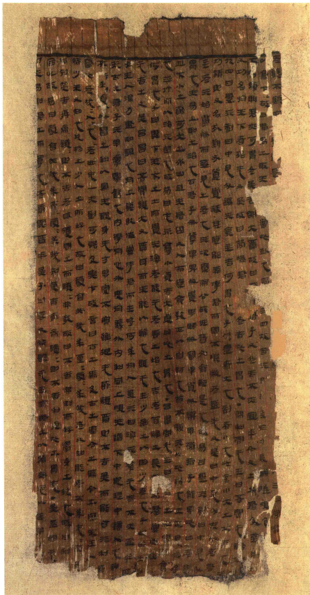
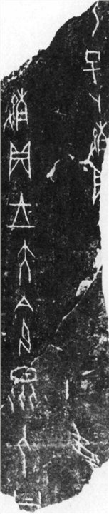

东南大学 · 计算机科学与工程学院 · 文脉智算团队
文脉智算
文脉智算团队立足人工智能与人文研究的交汇前沿，致力于以智能技术重新激活文化材料、历史经验与知识传统之间的内在联系。团队关注跨时代、跨媒介、跨学科的人文问题，推动算法能力与人文阐释相互支撑，使人工智能不仅成为处理复杂资料的工具，也成为拓展人文学术视野、重构文化知识表达与传承方式的重要桥梁。
展示实例


展示实例

















方向建设中
字体风格迁移生成
展示实例